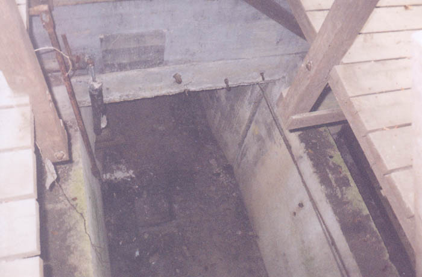
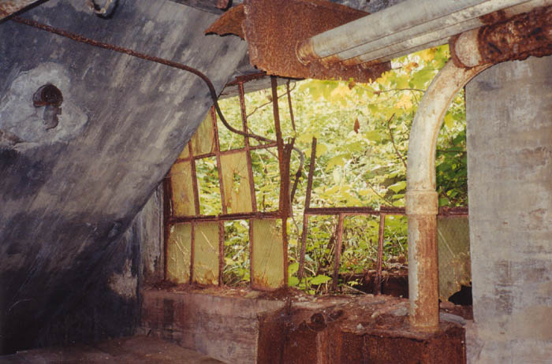
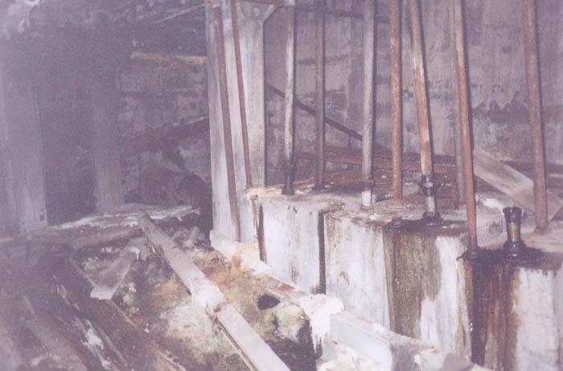
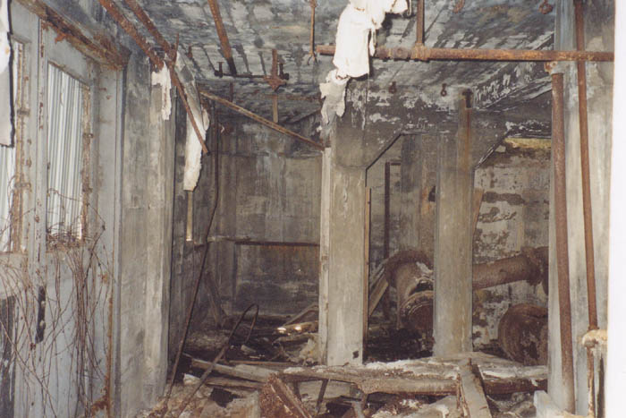
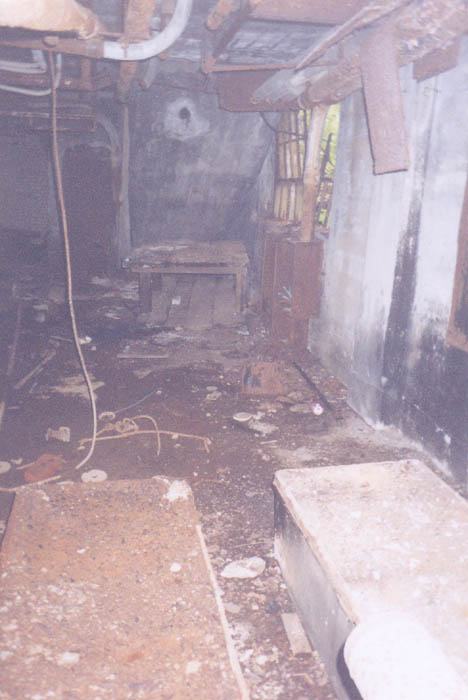

The creek once used in the shot cooling process runs under the building through a concrete channel. At several points it opens on the main floor. Channels were also used to connect three cisterns which supplied water for the furnaces and electrical generators.

Then there's the basement itself, which isn't as big as it could be but does exist beneath the front portion of the building. We found broken bicycles, bricks, and other junk down here. Apparently part of this used to be at ground level, but fill dirt turned it into the basement later on.

The basement was once the locker room area, and there were still a few broken locker pieces lying around. There was a recognizable bathroom, as well as a lot of unrecognizable metal and concrete.

Overall the basement is probably the portion of the factory which most resembles its original state; the miscellaneous tables, benches, lockers, and industrial clocks that weren't hauled off mostly ended up here.

Main Page
. . . . .
Main Floors
. . . . .
Grounds + Outbuildings
. . . . .
Roof + Tower
. . . . .
Hauntings
Back